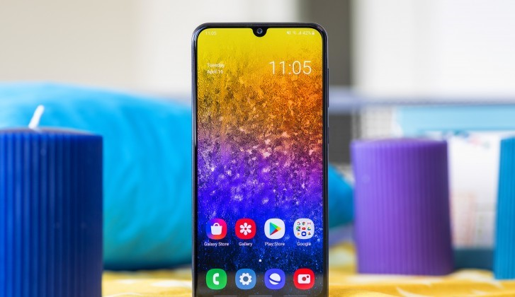
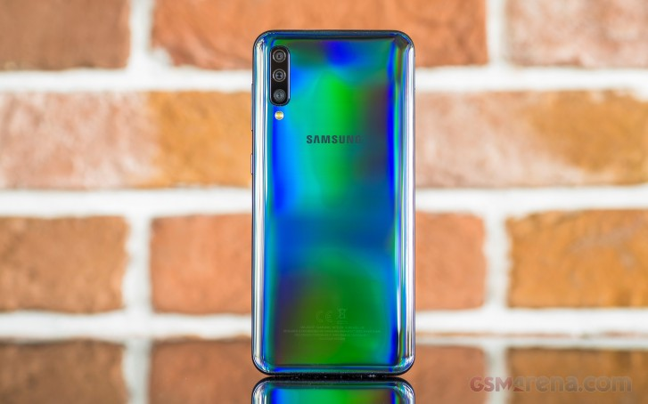

The Galaxy A series has always been comprised of premium midrangers. But Samsung's strategy for it has come through several transformations. From all-metal phones and water-resistant designs, through a couple of odd experiments, and lately - pioneering trendy features like notched AMOLEDs and ultra-wide-angle snappers.
|  |  |
| Front View | Back View |
|---|
The whole front of the A50 is taken by the large 6.4" Infinity-U Super AMOLED screen. It has a U-shaped notch at the top for the 25MP selfie camera, while the earpiece so thin that's it is almost invisible above it. The screen has minimal bezels on its top and longer sides, but there is a noticeable chin at the bottom for the screen controller. The flagship models are currently the only ones not having that chin but the jury is still out whether this is good in usability terms or not.
With a diagonal of 6.4 inches, the screen is a pretty close match to the one on the S10+ size-wise, of course. It also supports HDR10+ and has fancy curved sides. It is 1080p in resolution and has a different aspect with 19.5:9 ratio.
The Galaxy A50 is among the first mid-rangers to come with the brand new One UI based on Google's latest Android Pie. It premiered on the Galaxy S10 phones a couple of weeks ago, but it's a promising replacement of the previous Samsung Experience UX. Just as expected, it packs heavy customizations and tons of old and new features but presented in a cleaner and simplistic way.
The Galaxy A50 is the first smartphone we meet powered by the Exynos 9610 chip designed by Samsung. Contrary on what the model number suggests, the 9610 SoC is part of the mid-range Exynos 7 Series, so you shouldn't hope for flagship-grade speeds.
The Galaxy A50 by default shoots in 12MP, but this can be changed from the aspect settings - 3:4 corresponds to 12MP, while 3:4H means 25MP. When shooting in 25MP you can't use Auto HDR or any HDR for that matter, but that's pretty much the only caveat. So, the photos are overall soft, but you can notice the processing tried to compensate for that with sharpening, but it is often too aggressive and there are noticeable sharpening halos in the pictures.

| Body | Gorilla Glass 3 front, plastic frame and back |
|---|---|
| Processor | Exynos 9610 Octa (10nm) |
| Screen | 6.4" Super AMOLED; 19.5:9 aspect ratio; FullHD+ (1080 x 2340 px) |
| Battery | 4,000mAh Li-Ion; 15W quick charge |
| Software | Android 9.0 Pie; Samsung One UI on top |
| Camera |
|
Samsung got a lot of things right in the Galaxy A50 - the design and color options, the screen, the performance, and the battery life. The still images, while not impressive in detail, are of high-resolution and dependable as long as there's sufficient light. Nighttime photos turn out with poor dynamic range, fuzzy and noisy. Most of the competitors perform much better in low-light situations. The 1080p videos, on the other hand, are impressive.The addition of the One UI is welcome on a midranger, and we like the direction where it is going. Yes, the Galaxy A50 isn't water-resistant as its predecessors, but it excels elsewhere and makes up for all omissions with a very competitive price. We liked it for sure, and we'd recommend checking it out if it fits your budget bracket.
| Pros | Cons |
|---|---|
|
|